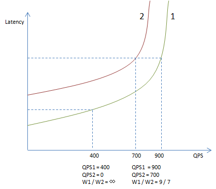
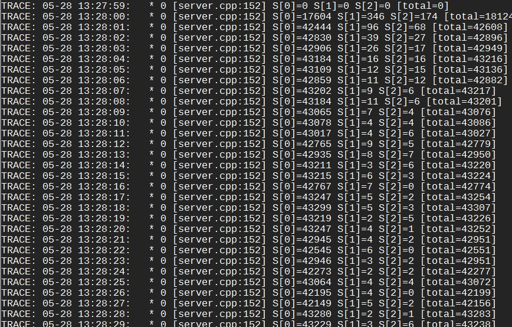
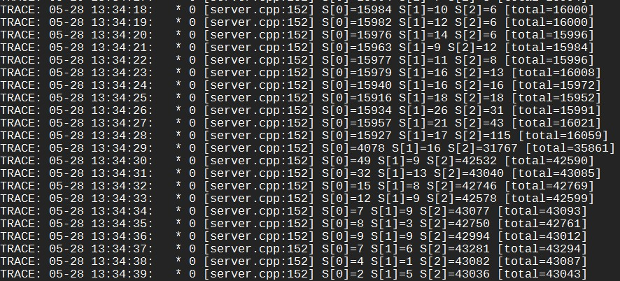
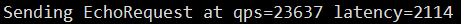
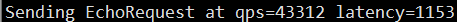

LALB 全称 Locality-aware load balancing，是一个能把请求及时、自动地送到延时最低的下游的负载均衡算法，特别适合混合部署环境。该算法产生自 DP 系统，现已加入 brpc。
为什么需要 LALB
最常见的分流算法是 rr（round robin）和随机。这两个方法的前提是下游的机器和网络都是类似的，但在目前的线上环境下，特别是混部的产品线中，这个前提已经很难成立。
这些问题其实一直有，但往往被 OP 辛勤的机器监控和替换给隐藏了。框架层面也有过一些努力，比如 UB 中的 WeightedStrategy 是根据下游的 cpu 占用率来进行分流，但明显地它解决不了延时相关的问题，甚至 cpu 的问题也解决不了：因为它被实现为定期 reload 一个权值列表，可想而知更新频率高不了，等到负载均衡反应过来，一大堆请求可能都超时了。并且这儿有个数学问题：怎么把 cpu 占用率转为权值。假设下游差异仅仅由同机运行的其他程序导致，机器配置和网络完全相同，两台机器权值之比是 cpu idle 之比吗？假如是的，当我们以这个比例给两台机器分流之后，它们的 cpu idle 应该会更接近才对；而这会导致我们的分流比例也变得接近，从而使两台机器的 cpu idle 又出现差距。你注意到这个悖论了吗？这些因素使得这类算法的实际效果和那两个基本算法没什么差距，甚至更差，用者甚少。
我们需要一个能自适应下游负载、规避慢节点的通用分流算法。
基本原理
在 DP 2.0 中我们使用了一种新的算法：Locality-aware load balancing，能根据下游节点的负载分配流量，还能快速规避失效的节点，在很大程度上，这种算法的延时也是全局最优的。基本原理非常简单：
以下游节点的吞吐除以延时作为分流权值。
比如只有两台下游节点，W 代表权值，QPS 代表吞吐，L 代表延时，那么 W1 = QPS1 / L1 和 W2 = QPS2 / L2 分别是这两个节点的分流权值，分流时随机数落入的权值区间就是流量的目的地了。
一种分析方法如下：稳定状态时 L1 和 L2 应当是趋同的。当 L1 小于 L2 时，节点 1 会获得相比其 QPS1 更大的 W1，从而在未来获得更多的流量，直到其延时高于平均值或没有更多的流量。
注意这个算法并不是按照延时的比例来分流，不是说一个下游 30ms，另一个 60ms，它们的流量比例就是 60 / 30。而是 30ms 的节点会一直获得流量直到它的延时高于 60ms，或者没有更多流量了。以下图为例，曲线 1 和曲线 2 分别是节点 1 和节点 2 的延时与吞吐关系图，随着吞吐增大延时会逐渐升高，接近极限吞吐时，延时会飙升。左下的虚线标记了 QPS=400 时的延时，此时虽然节点 1 的延时有所上升，但还未高于节点 2 的基本延时（QPS=0 时的延时），所以所有流量都会分给节点 1，而不是按它们基本延时的比例（图中大约 2:1）。当 QPS 继续上升达到 1600 时，分流比例会在两个节点延时相等时平衡，图中为 9 : 7。很明显这个比例是高度非线性的，取决于不同曲线的组合，和单一指标的比例关系没有直接关联。在真实系统中，延时和吞吐的曲线也在动态变化着，分流比例更加动态。

一个分流实验
我们用一个例子来看一下具体的分流过程。启动 3 台 server，逻辑分别是 sleep 1ms、2ms、3ms，对于 client 来说这些值就是延时。启动 client（50 个同步访问线程）后每秒打印的分流结果如下：

S[n] 代表第 n 台 server。由于 S[1] 和 S[2] 的平均延时大于 1ms，LALB 会发现这点并降低它们的权值。它们的权值会继续下降，直到被算法设定的最低值拦住。这时停掉 server，反转延时并重新启动，即逻辑分别为 sleep 3ms、2ms、1ms，运行一段时间后分流效果如下：

刚重连上 server 时，client 还是按之前的权值把大部分流量都分给了 S[0]，但由于 S[0] 的延时从 1ms 上升到了 3ms，client 的 qps 也降到了原来的 1/3。随着数据积累，LALB 逐渐发现 S[2] 才是最快的，而把大部分流量切换了过去。同样的服务如果用 rr 或 random 访问，则 qps 会显著下降。
使用 rr 或 random 时：

使用 la 时：

真实的场景中不会有这么显著的差异，但你应该能看到差别了。这个算法有很多应用场景。
但我们也不能仅看到“基本原理”，这个算法有它复杂的一面。
DoublyBufferedData：让读之间无竞争
LoadBalancer 是一个读远多于写的数据结构：大部分时候，所有线程从一个不变的 server 列表中选取一台 server。如果 server 列表真是“不变的”，那么选取 server 的过程就不用加锁，我们可以写更复杂的分流算法。一个方法是用读写锁，但当读临界区不是特别大时（毫秒级），读写锁并不比 mutex 快，而实用的分流算法不可能到毫秒级，否则开销也太大了。另一个方法是双缓冲，很多检索端用类似的方法实现无锁的查找过程，它大概这么工作。
这个方法的问题在于它假定睡眠一段时间后就能避免和前台读线程发生竞争，这个时间一般是若干秒。由于多次写之间有间隔，这儿的写往往是批量写入，睡眠时正好用于积累数据增量。
但这套机制对“server 列表”不太好用：总不能插入一个 server 就得等几秒钟才能插入下一个吧，即使我们用批量插入，这个“冷却”间隔多少会让用户觉得疑惑：短了担心安全性，长了觉得没有必要。我们能尽量降低这个时间并使其安全么？
我们需要写以某种形式和读同步，但读之间相互没有竞争。一种解法是，读拿一把 thread-local 锁，写需要拿到所有的 thread-local 锁。
完成这些功能的数据结构是 DoublyBufferedData<>，我们常简称为 DBD。brpc 中的所有 load balancer 都使用了这个数据结构，使不同线程在分流时几乎不会互斥。而其他 rpc 实现往往使用了全局锁，这使得它们无法写出复杂的分流算法：否则分流代码将会成为竞争热点。这个结构也有广泛的应用场景。
查找：从 O(N) 到 O(logN)
LALB 的查找过程是按权值分流，O(N) 方法如下：获得所有权值的和 total，产生一个介于 [0, total-1] 的随机数 R，逐个遍历权值，直到当前权值之和不大于 R，而下一个权值之和大于 R。
这个方法可以工作，也好理解，但当 N 达到几百时性能已经很差，这儿的主要因素是 cache 一致性：LALB 是一个基于反馈的算法，RPC 结束时信息会被反馈入 LALB，被遍历的数据结构也一直在被修改。这意味着前台的 O(N) 读必须刷新每一行 cacheline。当 N 达到数百时，一次查找过程可能会耗时百微秒，更别提更大的 N 了，LALB（将）作为 brpc 的默认分流算法，这个性能开销是无法接受的。
另一个办法是用完全二叉树。每个节点记录了左子树的权值之和，这样我们就能在 O(logN) 时间内完成查找。当 N 为 1024 时，我们最多跳转 10 次内存，总耗时可控制在 1 微秒内，这个性能是可接受的。这个方法的难点是如何和 DoublyBufferedData 结合。
最困难的部分是增加和删除节点，它们需要在整体上对前台查找不造成什么影响，详细过程请参考代码。
权值的统计与计算
QPS 和 latency 使用一个循环队列统计，默认容量 128。我们可以使用这么小的统计窗口，是因为 inflight delay 能及时纠正过度反应，而 128 也具备了一定的统计可信度。不过，这么计算 latency 的缺点是：如果 server 的性能出现很大的变化，那么我们需要积累一段时间才能看到平均延时的变化。就像上节例子中那样，server 反转延时后 client 需要积累很多秒的数据才能看到平均延时的变化。目前我们并没有处理这个问题，因为真实生产环境中的 server 不太会像例子中那样跳变延时，大都是缓缓变慢。当集群有几百台机器时，即使我们反应慢点给个别机器少分流点也不会导致什么问题。如果在产品线中确实出现了性能跳变，并且集群规模不大，我们再处理这个问题。
权值的计算方法是 base_weight = QPS * WEIGHT_SCALE / latency ^ p。其中 WEIGHT_SCALE 是一个放大系数，为了能用整数存储权值，又能让权值有足够的精度，类似定点数。p 默认为 2，延时的收敛速度大约为 p=1 时的 p 倍，选项 quadratic_latency=false 可使 p=1。
权值计算在各个环节都有最小值限制，为了防止某个节点的权值过低而使其完全没有访问机会。即使一些延时远大于平均延时的节点，也应该有足够的权值，以确保它们可以被定期访问，否则即使它们变快了，我们也不会知道。除了待删除节点，所有节点的权值绝对不会为 0。
这也制造了一个问题：即使一个 server 非常缓慢（但没有断开连接），它的权值也不会为 0，所以总会有一些请求被定期送过去而铁定超时。当 qps 不高时，为了降低影响面，探测间隔必须拉长。比如为了把对 qps=1000 的影响控制在 1% 内，故障 server 的权值必须低至使其探测间隔为 10 秒以上，这降低了我们发现 server 变快的速度。
inflight delay：更快地纠正错误分流
我们必须追踪还未结束的 RPC，否则我们就必须等待到超时或其他错误发生，而这可能会很慢（超时一般会是正常延时的若干倍），在这段时间内我们可能做出了很多错误的分流。最简单的方法是统计未结束 RPC 的耗时，这样「（当前时间 - 发出时间之和）/ 未结束次数」便是未结束 RPC 的平均耗时，我们称之为 inflight delay。
当 inflight delay 大于平均延时时，我们就线性地惩罚节点权值，即 weight = base_weight * avg_latency / inflight_delay。当发向一个节点的请求没有在平均延时内回来时，它的权值就会很快下降，从而纠正我们的行为，这比等待超时快多了。不过这没有考虑延时的正常抖动，我们还得有方差，方差可以来自统计，也可简单线性于平均延时。不管怎样，有了方差 bound 后，当 inflight delay > avg_latency + max(bound * 3, MIN_BOUND) 时才会惩罚权值。3 是正态分布中的经验数值。